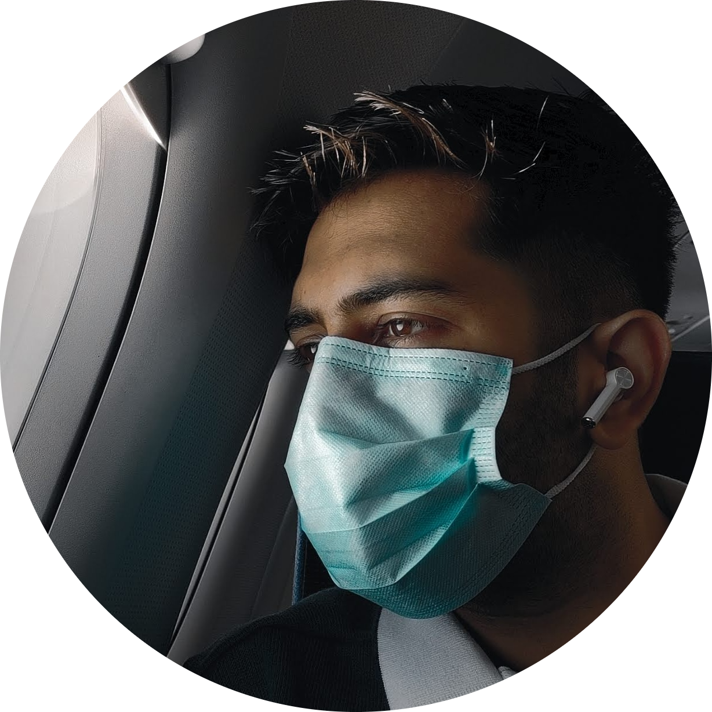

<!DOCTYPE html>
<html lang="en">

<head>
    <meta charset="UTF-8">
    <meta http-equiv="X-UA-Compatible" content="IE=edge">
    <meta name="viewport" content="width=device-width, initial-scale=1.0">
    <title>⚡Rudransh Ka Site</title>
</head>

<body>
    <table cellspacing="20">
        <tr>
            <td><br></td>
            <td> <h1>⚡Rudransh Tiwari</h1>
            <p><em>Founder and CTO of the <strong>App brewry</strong> </em> </p>
            <p>I am a Web Developer from SRM university, and i love Burgers!!🍕</p></td>
        
        </tr>
    </table>
    <hr noshade="3"> 

    <h3>Education</h3>
        <ul>
        <li> <a href="https://www.srmist.edu.in/">SRM UNIVERSITY </a>CGPA:8.14 </li>
        <li>Electronics and Communication spz Biomed</li>
        </ul>
    <h3>My Hobbies</h3>
        <ul>
        <li><a href="hobbies.html"> My Hobbies</a> </li>
        </ul>
    <h3>Contact Details</h3>
        <ol>
        <li><a href="Contact Details.hTML">My Contact</a></li>
        </ol>

    <h3>Work Experience</h3>
        <ul>
        <li><table border="1">
            <tr>Jun 2021 - Present (4 months +)
            Associate Functional Consultant-Internship
            HighRadius
            
            Working as a Trainee Consultant on Credit Cloud, HighRadius Credit Cloud automates the 
            credit management process, enabling credit managers to make quicker and more accurate 
            decisions.
            <li>Jul 2020 - Present (1 year 3 months +) Founder, Developer
            Abhi Skill
            Jul 2020 - Present (1 year 3 months +)
            Created an online skill-based learning platform for blue-collar workers to upskill and establish 
            a community around their skills.</li>
            Project Intern
            <li>Oct 2020 - Present (1 year +) Forus Health Private Limited
            
            Developed and led a team of five people in the development and implementation of a product for a highresolution camera on the Raspberry Pi for use in a medical imaging and equipment firm.</li>
            <li>Jun 2021 - Jun 2021 (1 month)
            Summer Internship
            HighRadius
            
            Case study-based internship around solving the Business billing Model for a Telecom firm using 
            Analytics and strategizing a cost-effective model. </li>
            
            Head Of Sponsorship
            Directorate Of Student Affairs, SRMIST
            2019 - Apr 2020 (1 year 4 months)
            Led SRM UNIVERSITY's Sponsorship Team, which was responsible for event funding and 
            implementation</li> </tr>  </table>
        </ul>
    <h3>Skills</h3>
        <table>
           
    <ol>
        <td>
            <li>HTML⭐⭐⭐⭐</li>
            <li>CSS⭐⭐⭐⭐</li>
        </td> 
        <td><li>JS⭐⭐⭐⭐⭐</li>
        <li>SQL⭐⭐⭐⭐</li> </td>
    </ol>
        
           
    </table>
</body>

</html>